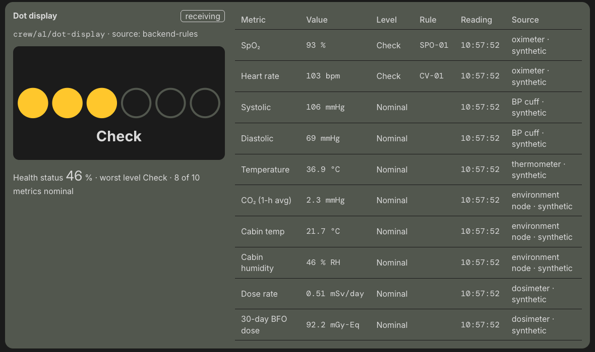

Lo que hemos construido
6 aparatos virtuales y un fallo de cabina
Hace de red de la cabina
App sin conexión: reglas, pantallas y voz
Recibe y guarda los paquetes al médico

Probado en directo
Un fallo del aire de la cabina dispara las alertas en tiempo real.
Datos honestos
Cada lectura dice si es sintética o manual.
Lista para lo real
Lecturas en formato FHIR: un aparato real solo necesita un adaptador.
Six Dots Companion